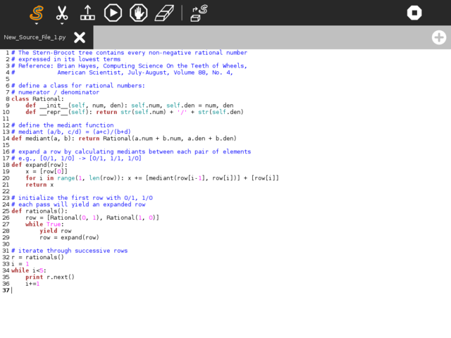
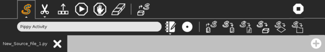

Pippy¶
About¶
Pippy allows the student to examine, execute, and modify simple Python programs. In addition it is possible to write Python statements to play sounds, calculate expressions, or make simple text based interactive games.

Where to get Pippy¶
Pippy is included in the standard releases of the OLPC software. It is available for download here
The source code is available on GitHub.
Using¶
Toolbars¶

top row: main toolbar
- Activity Toolbar Button
Opens activity toolbar (Shown open)
- Edit Toolbar Button
Toolbar with Copy/Paste/Undo/Redo tools
- Output Panel Button
Opens/closes output panel
- Run Button
Executes code
- Stop Button
Stops execution in the code
- Erase Button
Erase code
- Sample Panel Button
Opens a panel with sample Python programs
middle row: activity toolnbar
- Activity title
Change the name of your project
- Description Panel Button
Open a panel to write notes about your project
- Collaboration Panel Button
Open a panel to launch sharing
- Import Button
Load a Python program from the Journal
- Export Button
Save a Python program to the Journal
- Library Button
Save Python code to the Pippy library (where is can be used by other Python programs)
- Example Button
Save Python code as a new Pippy example project
- Activity Button
Save Python code as a new Sugar activity
- Distutils Button
Save Python code as a distutil package (Python module)
bottom row: tabs
Pippy supports multiple tabs so you can work on more than one module at a time.
Learning with Pippy¶
Etoys and Turtle art provide easy introduction to programming. Pippy introduces a more traditional view of programming a computer, wherein the instructions are first written to a text file, and then executed with a “run” command.
In particular, it is instructive to play with the sounds:
Get the list of sounds by executing the Getsoundlist program
Copy the name of one of the sounds and replace the “digeridu” sound name in Playwave program.
Extending Pippy¶
If Pippy is used in parallel with the Write Activity, it is possible to develop larger programs. Copy the program that you develop in the Write Activity by selecting all (ctrl + a) and copying it to the clipboard (ctrl + c), then switch to the Pippy Activity, and paste (ctrl + v) it into the code window. If there are errors that you want to correct, you can make the changes in the code window, and immediately see the results of your changes. Then by copying the changed program back to the clipboard, you can paste it back into the Word Activity, and save the changes to the Journal.
Learning with Pippy¶
for lesson plans for learning Python, see Pippy Lesson Plan .
Modifying Pippy¶
The student can add small programs, and have them show up in the left column of Pippy by adding files to /home/olpc/Activities/Pippy.activity/data. There is a large number of suggested examples of programs for Pippy at http://wiki.laptop.org/go/Pippy#Examples.
Where to report problems¶
Please report bugs and make feature requests at Pippy/issues.